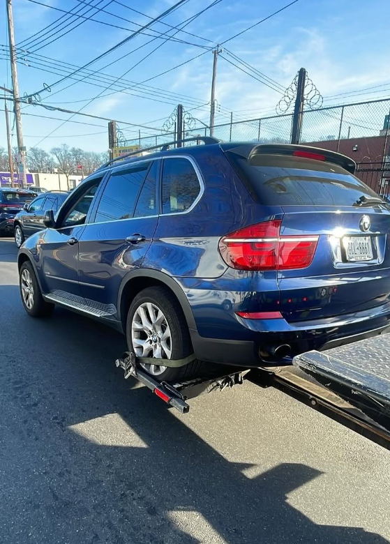
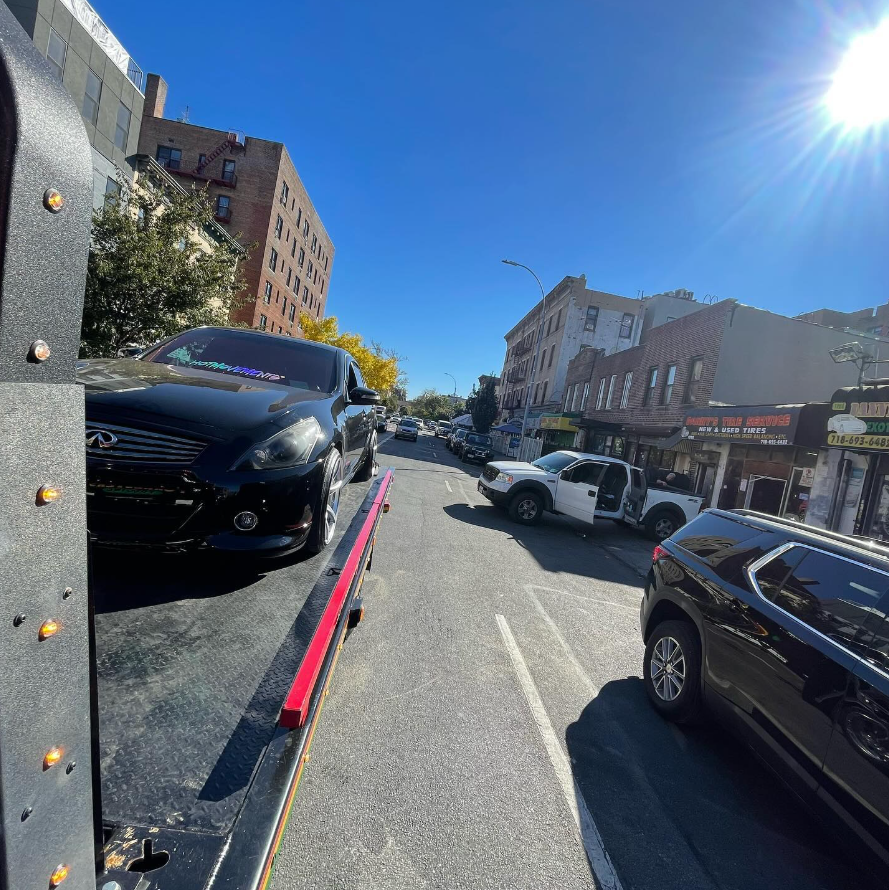

Done right.
Professional vehicle towing and recovery built for New York streets. From everyday breakdowns to accident-damaged vehicles and larger trucks, JB Towing & Recovery handles the job with the right equipment and a careful approach.
Serious equipment.
Clean service.
Built around the work shown in JB Towing & Recovery’s own fleet photos: flatbed transport, damaged-vehicle recovery, SUV towing and commercial vehicle moves across dense city streets.
Flatbed Towing
Low-contact vehicle transport for cars, SUVs, all-wheel-drive vehicles and vehicles that need a secure flatbed.
Accident Recovery
Careful loading and transport for vehicles with collision damage, broken wheels, body damage or limited drivability.
SUV & 4x4 Towing
Transport for crossovers, SUVs, pickups and lifted vehicles using equipment sized for the job.
Commercial Vehicle Towing
Flatbed towing for vans, work trucks and select commercial vehicles throughout Brooklyn and nearby areas.
Real jobs.
Real streets.
These are real towing photos supplied for the site, presented in a continuous gallery that feels active without turning the page into a heavy slideshow.







Brooklyn + surrounding areas.
Each major service area has its own dedicated page so the site can target local searches instead of stuffing every city and county into one landing page.
Built for New York towing.
City towing takes more than a truck. Tight streets, traffic, damaged vehicles and busy pickup locations all require a careful setup and fast decisions.
Before you call.
What areas do you serve?
Brooklyn is the primary service area, with coverage extending into Queens, Manhattan, the Bronx, Staten Island and nearby Nassau County depending on the job.
Can you tow SUVs and larger vehicles?
Yes. The supplied work photos show SUV, pickup and box-truck towing. When calling, share the vehicle year, make, model and condition so the proper equipment can be confirmed.
Do you tow accident-damaged vehicles?
Yes. Flatbed transport is especially useful when a vehicle has body, wheel or suspension damage that makes normal towing difficult.
What information should I have ready?
Your pickup location, destination, vehicle make/model, whether the vehicle rolls or steers, and a quick description of the issue.
Get JB on the phone.
For the fastest help, call with your pickup location, destination and vehicle details.